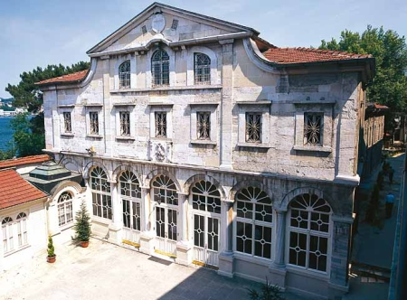

De ce au rămas Balcanii creștini sub stăpânirea otomană?
de ce creștinismul a rămas religia dominantă în Balcani în perioada otomană, în ciuda secolelor de stăpânire islamică.

Imperiul Otoman a avut control asupra Balcanilor timp de sute de ani. Totuși, până în ziua de astăzi, religia principală în majoritatea țărilor din Balcani a rămas creștinismul. De ce?
Imperiul Otoman nu a impus convertirea la islam. Creștinilor și evreilor li s-a permis să își practice religia, deși nu erau considerați egali din punct de vedere social cu musulmanii. În primul rând, ei erau nevoiți să plătească anumite taxe suplimentare tocmai din acest motiv. De asemenea, au existat episoade de presiune și abuzuri menite să îi încurajeze să se convertească, însă, în general, oamenii aveau dreptul să își păstreze propria credință.Într-un fel, această politică era avantajoasă pentru imperiu din punct de vedere economic, deoarece ne-musulmanii plăteau taxe suplimentare. Totodată, în anumite perioade, Imperiul Otoman putea fi perceput ca fiind mai tolerant din punct de vedere religios decât unele state europene, unde conflictele confesionale erau frecvente.
După căderea Constantinopolului, în 1453, Patriarhia Ecumenică a Constantinopolului a fost recunoscută de otomani ca autoritate asupra creștinilor ortodocși. Acest lucru a demonstrat clar că imperiul accepta existența comunităților creștine pe teritoriul său și le permitea să își păstreze identitatea religioasă.Trebuie reținut și faptul că religia avea un rol mult mai important în viața oamenilor decât în prezent. Pentru mulți, trecerea la o altă credință însemna și ruperea de comunitatea din care făceau parte. Dacă cineva se convertea la islam, exista riscul să își piardă prietenii, sprijinul familiei și acceptarea din partea comunității.Cu toate acestea, au existat regiuni în care populația s-a convertit în număr mare la islam, precum Albania sau Bosnia și Herțegovina, unde o mare parte a populației este și astăzi musulmană.
**De ce nu s-a întâmplat același lucru și în Țările Române? ** Spre deosebire de statele aflate la sud de Dunăre, Țările Române au fost, în cea mai mare parte a perioadei otomane, state vasale. Acest statut le-a permis să își păstreze autonomia internă, conducătorii și Biserica Ortodoxă, chiar dacă plăteau tribut și aveau anumite obligații față de sultan.Faptul că sud-estul Europei a rămas în mare parte creștin nu este deloc surprinzător dacă luăm în considerare politica Imperiului Otoman. În general, autoritățile otomane nu considerau convertirea forțată a supușilor o prioritate. Pentru ele, mult mai importante erau stabilitatea imperiului, menținerea ordinii și încasarea taxelor.